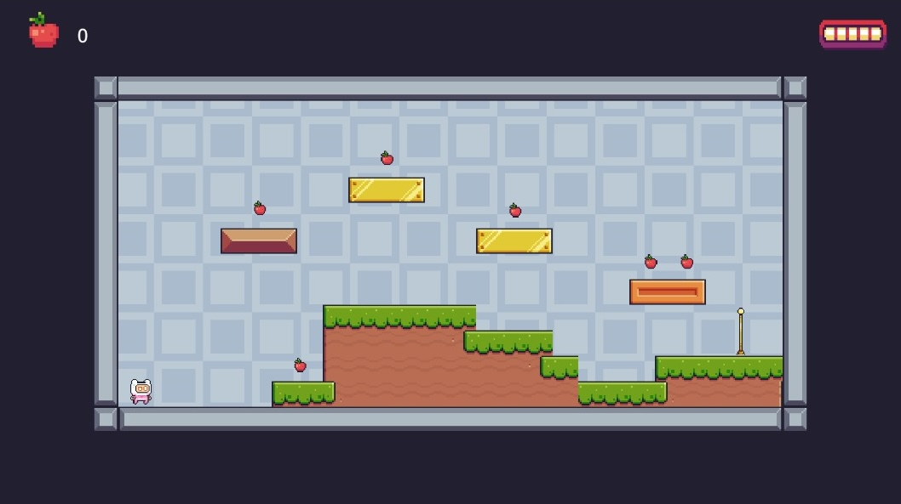
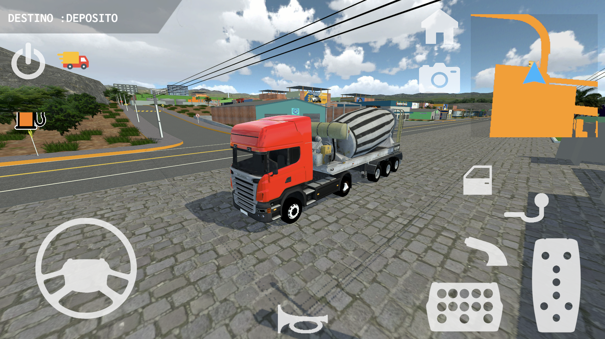
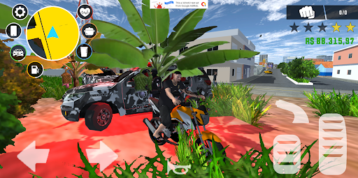

Plataform 2D



BR Truck V1


157 - Brazil
Meu nome é Jefferson, tenho 19 anos e sou um desenvolvedor de jogos na plataforma Unity, onde atuo desde 2020. Durante esse período, publiquei alguns jogos na Google Play que, em conjunto, já acumularam mais de 5 milhões de Downloads. Além da programação em C# com Unity, também possuo habilidades em modelagem 3D, especialmente utilizando o SketchUp. Paralelamente ao meu trabalho como desenvolvedor, mantenho um canal no YouTube com mais de 40 mil inscritos e 500 mil visualizações, onde compartilho conhecimento e tutoriais relacionados ao desenvolvimento de jogos e à utilização do Unity. Minha trajetória é marcada pelo constante aprimoramento técnico e pela busca de novas oportunidades para inovar e criar experiências interativas de qualidade.